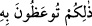

büyük günahlardandır.
“İşte bu” buradaki “zalikum” ifâdesi şâhidliğe teşvik edilip yerine getirilmesine
işâret etmektedir. Ya da “bu” ifâdesiyle âyette geçen boşamanın sünnete uygun olması,
iddet/bekleme süresinin sayılması, bu süre içinde kadınların koca evinden dışarı
çıkmamaları ve çıkarılmamaları, hanımına geri dönecekse buna iki şâhid tutulması,
şâhidliğin tebdil ve tağyirden/değiştirmeden sakınılıp vakaya uygun bir şekilde
yapılması gibi hususların hepsine işâret edilmektedir.
“Allah’a ve âhiret gününe inananlara verilen bir öğüttür.” Burada yer alan “vaaz”
içinde korkutma unsuru olan bir vazgeçirme ve caydırmadır. Bu korkutmanın Allah’a ve
âhiret gününe inananlara yöneltilmesinin nedeni, verilen öğütten bu kişilerin
yararlanacağından dolayıdır. Maksad o kişilere bunu hatırlatmaktır. Âyette Mücâdele
suresinde olduğu gibi “: Size öğütlenen budur.” (el-Mücâdele, 58/3)
denilmemiştir. Çünkü Mücâdele suresinde müminleri kıskançlığa teşvik etmek için
böyle buyrulmuştur. Zira kıskançlığı olmayan kişinin dini de yoktur.
Allah’a îmânın gereklerinden biri de mâbudluk ve rablık haklarını gözetmek, âhiret
gününe inanmak, hesaba çekilmekten ve azaba uğramaktan korkmak, Yüce Allah’ın
ihsanını ve sevabını ummaktır.
Allah’a ve âhiret gününe inanan kişi yaratıcısından ve yaratıklardan utanır da Allah
Teâlâ’nın öğütlerine uyup onunla amel eder. Bu âyet-i kerîme insanın iki günü olup
bunlardan birinin ilk gün/ dünya, diğerinin de âhiret günü olduğuna da işâret etmektedir.
Arapçada “yevm/gün” denildiğinde örfe göre güneşin doğuşundan batışına kadar olan
zaman dilimi anlaşılır. Şer’an yevm ise ikinci fecrin doğuşundan güneşin batışına kadar
uzanan zaman dilimidir. Bu iki mânânın ikisi de burada kasdedilmiş değildir, bunun
kasdedilmediği zaten açıktır. Şu halde burada âhiret günü denirken kasdedilen ister
gece, ister gündüz olsun, ister uzun, ister kısa bulunsun mutlak zaman dilimi demektir.
Bu söz konusu zaman ya sınırlıdır, bu takdirde zaman dünya zamanı olmuş olur ve ilk
günden maksad da bu zaman olmuş olur, ya da sınırsızdır ki bu da âhiret zamanıdır ve
yevmu’l-ahir ile kasdedilen sonu olmayan âhiret günü olmuş olur.
Âhiret gününe “yevmü’l-âhir” denmesi dünya gününden sonra gerçekleşmesinden
dolayıdır. Âlimler buradaki “yevmü’l-âhir”dan maksadın yine mahdud bir vakit
olmasının mümkün olduğunu ifâde etmişlerdir. Bu vakit de ‘vaktü’n-nüşûr’ denilen
dirilme vaktinden cennetlik ve cehennemliklerin cennetteki ya da cehennemdeki
yerlerine varacakları ana kadarki zaman dilimi olmuş olur. Buna göre buradaki âhiret
gününün güneşin doğmasıyla batması arasındaki sınırlı iki günden istiâre yoluyla
kasdedilmiş gün olması da mümkündür. Güneşin doğmasıyla batması arasındaki zaman
dilimi ise uyku uyuklama zamanıdır. İşte bu iki zaman arasındaki şeyle dirilmeden önce
kabirlerdeki geçen zaman kasdedilmiş olabilir. Nitekim Allah Teâlâ: “Eyvah, bizi
kabrimizden kim kaldırdı.” (Yâsin, 36/52) âyetinde bu şekilde hikâye etmektedir.
Buna göre yevmü’l-âhir’e yarın denir. Nitekim Haşr suresinin sonlarında bu açıklama